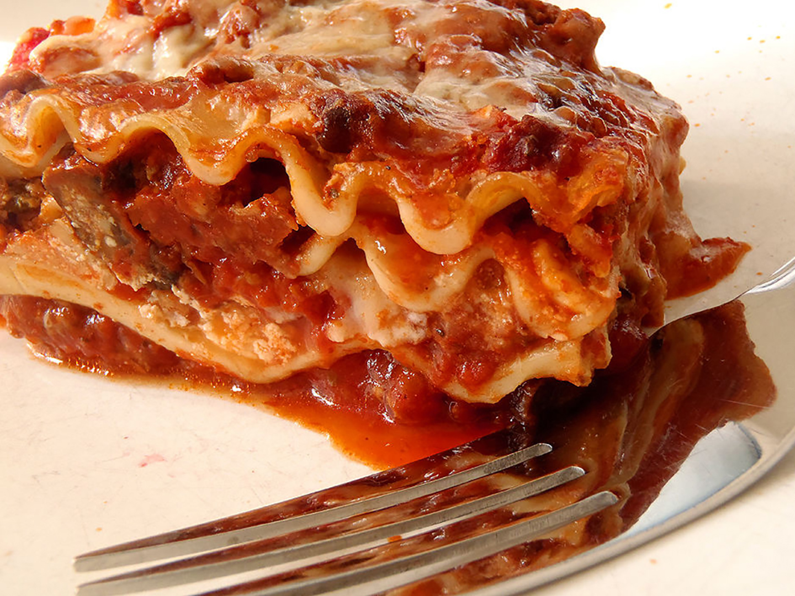

HOME
World's Best Lasagna

Authentic Italian Lasagna Recipe
This delicious Lasagna is easy to make and is sure to be a hit for whatever occasion!
You do not need to be an expert chef to follow along and create your own slic of Italian cuisine.
Ingredients
- 12 lasagna noodles
- 4 cups mozzarella cheese
- 1/2 cup parmesan cheese
Tomato Sauce
- 1/2 lb lean ground beef
- 1/2 lb Italian sausage
- 1 onion diced
- 2 cloves garlic - minced
- 36 ounces pasta sauce
- 2 tbsp tomato paste
- 1 tsp Italian seasoning
Cheese Mixture
- 2 cups ricotta cheese
- 1/4 cup fresh parsley - chopped
- 1 egg - beaten
Steps
- Heat oven to 350°F. Cook pasta al dente according to package directions. Rinse under cold water and set aside.
- Brown beef, sausage, onion and garlic over medium high heat until no pink remains. Drain any fat.
- Stir in pasta sauce, tomato paste, Italian seasoning. Simmer 5 minutes.
- Make Cheese Mixture by combining 1 ½ cups mozzarella, ¼ cup parmesan cheese, ricotta, parsley, and egg.
- Add 1 cup meat sauce to a 9x13 pan.
Top with 3 lasagna noodles. Layer with ⅓ of the Cheese Mixture and 1 cup of meat sauce.
Repeat twice more.
Finish with 3 noodles topped with remaining sauce.
- Cover with foil and bake 45 minutes.
- Uncover, sprinkle with remaining cheese (2 ½ cups mozzarella cheese and ¼ cup parmesan),
and bake an additional 15 minutes or until browned and bubbly. Broil 2-3 minutes if desired.
- Rest 10-15 minutes before cutting.